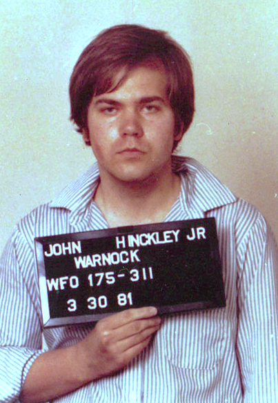

Case Details:
John Hinckley Jr. attempted to assassinate U.S. President Ronald Reagan in Washington, D.C., wounding the President, press secretary James Brady, a police officer, and a Secret Service agent.
Verdict:
A jury found Hinckley not guilty by reason of insanity after defense experts showed he suffered from severe psychotic delusions and erotomania regarding actress Jodie Foster.This case used the Model penal code standard: basically saying Hinckley Jr. didn't have the capacity and had mental illness issues which caused him to have a lack of control for his actions. The Hinckley not guilty by reason ofnsanity (NGRI) acquittal initiated a great deal of controversy regarding the use of the insanity defense in the United States and stimulated numerous reforms (Callahan, Mayer, & Steadman, 1987; Low et al., 1986). 1 At the federal level, Congress passed the Insanity Defense Reform Act (1984), which removed the volitional prong of the ALl rule--leaving it substantively like M'Naghten, with its focus on the defendant's cognitive "appreciation" for purposes of determining whether he or she should be found not guilty by reason of insanity (Perlin, 1986, 1989). The modifier "substantial" was also removed, so that the substantive federal insanity test is whether or not the defendant "lacks capacity to appreciate the wrongfulness of his conduct"; thus, federal legislators successfully reintroduced the historically earlier "absolute" or "total" deprivation of capacity standard. In addition, the new standard specified that the mental disease or defect must be "severe" (Finkel, 1989; Perlin, 1989).
John Hinckley, Jr. and the Insanity Defense: The Public's Verdict
More information on the case/outcome of the case including the mostly wrongful view of the public. Including a phone survey being done that resulted in 87.1% believing that the defense is a loophole.